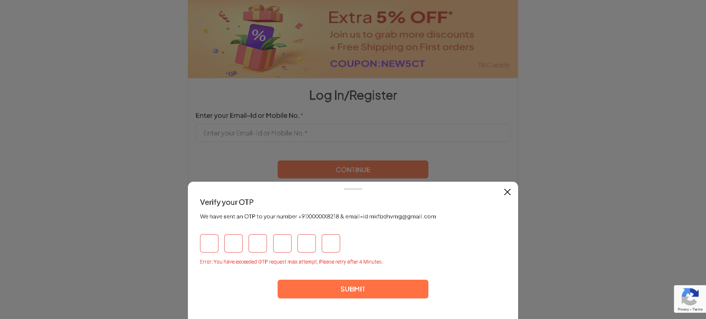

-
I want to verify login with user credentials
1:58:23 pm / 00:00:19:795 Fail
I want to verify login with user credentials
02.29.2024 1:58:23 pm 02.29.2024 1:58:43 pm 00:00:19:795 · #test-id=1FailLogin with valid emailGiven user should on the Firstcry websitestepdefinitions.MyProfile.addss(io.cucumber.java.Scenario)Login with valid email When User click on the loginStep skippedAnd User enters emailStep skippedAnd User will click on continue buttonStep skippedAnd User manually enter the OTPStep skippedThen User login should be successfulStep skipped
When User click on the loginStep skippedAnd User enters emailStep skippedAnd User will click on continue buttonStep skippedAnd User manually enter the OTPStep skippedThen User login should be successfulStep skipped -
Login with user inavlid credential
1:58:43 pm / 00:00:48:848 Pass
Login with user inavlid credential
02.29.2024 1:58:43 pm 02.29.2024 1:59:32 pm 00:00:48:848 · #test-id=15PassInvalid login of UserPassInvalid login of UserGiven User lands on the homepageWhen user clikcs on the loginbtnAnd user enters the email from row 0And user clicks on continuebtn 0Then user gets the login statusPassInvalid login of UserGiven User lands on the homepageWhen user clikcs on the loginbtnAnd user enters the email from row 1And user clicks on continuebtn 1Then user gets the login status -
My Profile Page Under My Account
1:59:32 pm / 00:00:44:950 Fail
My Profile Page Under My Account
02.29.2024 1:59:32 pm 02.29.2024 2:00:17 pm 00:00:44:950 · #test-id=39User wants to verify that My Profile Page is availaible and reachable.FailVerification of My Profile PageFailVerification of My Profile PageGiven Open FirstCry WebsiteThen Login by mkfbdhvmg@gmail.comThen Click on My Profile under My Accountstepdefinitions.MyProfile.addss(io.cucumber.java.Scenario)Verification of My Profile PageThen get the url and verify My Profile Page is reachedStep skipped -
Update Profile
2:00:18 pm / 00:02:19:284 Fail
Update Profile
02.29.2024 2:00:18 pm 02.29.2024 2:02:37 pm 00:02:19:284 · #test-id=50User wants to update profileFailVerify updation of ContactFailVerify updation of ContactGiven Open WebsiteThen Login using mkfbdhvmg@gmail.comThen Click on My Profilestepdefinitions.MyProfile.addss(io.cucumber.java.Scenario)Verify updation of Contact Then update fields and checkStep skippedThen verify test is passedStep skippedFailVerify updation of ContactGiven Open fc Website and do loginThen Navigate to My Profilestepdefinitions.MyProfile.addss(io.cucumber.java.Scenario)Verify updation of Contact
Then update fields and checkStep skippedThen verify test is passedStep skippedFailVerify updation of ContactGiven Open fc Website and do loginThen Navigate to My Profilestepdefinitions.MyProfile.addss(io.cucumber.java.Scenario)Verify updation of Contact Then update contact "9931345964"Step skippedThen verify it gets passedStep skipped
Then update contact "9931345964"Step skippedThen verify it gets passedStep skipped -
Update Contact
2:01:20 pm / 00:00:00:000 Pass
Update Contact
02.29.2024 2:01:20 pm 02.29.2024 2:01:20 pm 00:00:00:000 · #test-id=63User wants to update contact -
Update Child
2:02:38 pm / 00:00:52:925 Fail
Update Child
02.29.2024 2:02:38 pm 02.29.2024 2:03:31 pm 00:00:52:925 · #test-id=73User wants to update childFailVerify updation of ChildGiven Open up WebsiteWhen Login using the emailstepdefinitions.MyProfile.addss(io.cucumber.java.Scenario)Verify updation of Child Then Click on the ProfileStep skippedThen Add child detailsStep skippedThen Verify it is savedStep skipped
Then Click on the ProfileStep skippedThen Add child detailsStep skippedThen Verify it is savedStep skipped -
Delete Child
2:03:32 pm / 00:01:37:363 Fail
Delete Child
02.29.2024 2:03:32 pm 02.29.2024 2:05:09 pm 00:01:37:363 · #test-id=85User wants to delete childFailVerify deletion of ChildGiven Open up WebsiteWhen Login using the emailThen Click on the Profilestepdefinitions.MyProfile.addss(io.cucumber.java.Scenario)Verify deletion of ChildThen Delete the childStep skipped -
Update Address
2:05:12 pm / 00:10:23:724 Fail
Update Address
02.29.2024 2:05:12 pm 02.29.2024 2:15:35 pm 00:10:23:724 · #test-id=95User wants to update AddressFailUpdate and Verify AddressFailUpdate and Verify AddressGiven Open up Fc Website and add Login Detailsstepdefinitions.MyProfile.addss(io.cucumber.java.Scenario)Update and Verify Address Then Click the ProfileStep skippedThen click and Add address as per "testdata\\Address.xlsx"Step skippedThen Verify address is savedStep skippedFailUpdate and Verify AddressGiven Open up Fc Website and add Login DetailsThen Click the Profilestepdefinitions.MyProfile.addss(io.cucumber.java.Scenario)Update and Verify Address
Then Click the ProfileStep skippedThen click and Add address as per "testdata\\Address.xlsx"Step skippedThen Verify address is savedStep skippedFailUpdate and Verify AddressGiven Open up Fc Website and add Login DetailsThen Click the Profilestepdefinitions.MyProfile.addss(io.cucumber.java.Scenario)Update and Verify Address Then click and Add address as per "testdata\\emptyname.xlsx"Step skippedThen Verify address is savedStep skippedFailUpdate and Verify AddressGiven Open up Fc Website and add Login DetailsThen Click the Profilestepdefinitions.MyProfile.addss(io.cucumber.java.Scenario)Update and Verify Address
Then click and Add address as per "testdata\\emptyname.xlsx"Step skippedThen Verify address is savedStep skippedFailUpdate and Verify AddressGiven Open up Fc Website and add Login DetailsThen Click the Profilestepdefinitions.MyProfile.addss(io.cucumber.java.Scenario)Update and Verify Address Then click and Add address as per "testdata\\onewordname.xlsx"Step skippedThen Verify address is savedStep skippedFailUpdate and Verify AddressGiven Open up Fc Website and add Login DetailsThen Click the Profilestepdefinitions.MyProfile.addss(io.cucumber.java.Scenario)Update and Verify Address
Then click and Add address as per "testdata\\onewordname.xlsx"Step skippedThen Verify address is savedStep skippedFailUpdate and Verify AddressGiven Open up Fc Website and add Login DetailsThen Click the Profilestepdefinitions.MyProfile.addss(io.cucumber.java.Scenario)Update and Verify Address Then click and Add address as per "testdata\\emptyflat.xlsx"Step skippedThen Verify address is savedStep skippedFailUpdate and Verify AddressGiven Open up Fc Website and add Login DetailsThen Click the Profilestepdefinitions.MyProfile.addss(io.cucumber.java.Scenario)Update and Verify Address
Then click and Add address as per "testdata\\emptyflat.xlsx"Step skippedThen Verify address is savedStep skippedFailUpdate and Verify AddressGiven Open up Fc Website and add Login DetailsThen Click the Profilestepdefinitions.MyProfile.addss(io.cucumber.java.Scenario)Update and Verify Address Then click and Add address as per "testdata\\sevencharflat.xlsx"Step skippedThen Verify address is savedStep skippedFailUpdate and Verify AddressGiven Open up Fc Website and add Login DetailsThen Click the Profilestepdefinitions.MyProfile.addss(io.cucumber.java.Scenario)Update and Verify Address
Then click and Add address as per "testdata\\sevencharflat.xlsx"Step skippedThen Verify address is savedStep skippedFailUpdate and Verify AddressGiven Open up Fc Website and add Login DetailsThen Click the Profilestepdefinitions.MyProfile.addss(io.cucumber.java.Scenario)Update and Verify Address Then click and Add address as per "testdata\\emptystreet.xlsx"Step skippedThen Verify address is savedStep skippedFailUpdate and Verify AddressGiven Open up Fc Website and add Login DetailsThen Click the Profilestepdefinitions.MyProfile.addss(io.cucumber.java.Scenario)Update and Verify Address
Then click and Add address as per "testdata\\emptystreet.xlsx"Step skippedThen Verify address is savedStep skippedFailUpdate and Verify AddressGiven Open up Fc Website and add Login DetailsThen Click the Profilestepdefinitions.MyProfile.addss(io.cucumber.java.Scenario)Update and Verify Address Then click and Add address as per "testdata\\sevencharstreet.xlsx"Step skippedThen Verify address is savedStep skippedFailUpdate and Verify AddressGiven Open up Fc Website and add Login DetailsThen Click the Profilestepdefinitions.MyProfile.addss(io.cucumber.java.Scenario)Update and Verify Address
Then click and Add address as per "testdata\\sevencharstreet.xlsx"Step skippedThen Verify address is savedStep skippedFailUpdate and Verify AddressGiven Open up Fc Website and add Login DetailsThen Click the Profilestepdefinitions.MyProfile.addss(io.cucumber.java.Scenario)Update and Verify Address Then click and Add address as per "testdata\\emptypincode.xlsx"Step skippedThen Verify address is savedStep skippedFailUpdate and Verify AddressGiven Open up Fc Website and add Login DetailsThen Click the Profilestepdefinitions.MyProfile.addss(io.cucumber.java.Scenario)Update and Verify Address
Then click and Add address as per "testdata\\emptypincode.xlsx"Step skippedThen Verify address is savedStep skippedFailUpdate and Verify AddressGiven Open up Fc Website and add Login DetailsThen Click the Profilestepdefinitions.MyProfile.addss(io.cucumber.java.Scenario)Update and Verify Address Then click and Add address as per "testdata\\randompincode.xlsx"Step skippedThen Verify address is savedStep skipped
Then click and Add address as per "testdata\\randompincode.xlsx"Step skippedThen Verify address is savedStep skipped -
Delete Address
2:15:36 pm / 00:00:56:978 Fail
Delete Address
02.29.2024 2:15:36 pm 02.29.2024 2:16:33 pm 00:00:56:978 · #test-id=178User wants to delete AddressFailDelete and Verify AddressGiven Open Fc Website and add the Login DetailsThen Click on the Profile pagestepdefinitions.MyProfile.addss(io.cucumber.java.Scenario)Then click to delete addressStep skipped -
Manage Subscriptions
2:16:33 pm / 00:00:29:119 Fail
Manage Subscriptions
02.29.2024 2:16:33 pm 02.29.2024 2:17:02 pm 00:00:29:119 · #test-id=186User wants to manage subscriptionFailManage the SubscriptionsGiven Open Firstcry Website and Login Detailsstepdefinitions.MyProfile.addss(io.cucumber.java.Scenario)Manage the Subscriptions Then Click on My Profile pageStep skippedThen Click to manage subscription detailsStep skipped
Then Click on My Profile pageStep skippedThen Click to manage subscription detailsStep skipped -
Search for a product apply filters and add it to cart in Firstcry.com
2:17:02 pm / 00:00:10:754 Fail
Search for a product apply filters and add it to cart in Firstcry.com
02.29.2024 2:17:02 pm 02.29.2024 2:17:13 pm 00:00:10:754 · #test-id=194User wants test add to cart functionality with filters(advance search) on firstcry.comFailVerification of add to cart feature with advance searchGiven Open the ChromeBrowser and launch applicationstepdefinitions.MyProfile.addss(io.cucumber.java.Scenario)Verification of add to cart feature with advance search And Maximize the browserStep skippedWhen The pages loades click any one category from homepageStep skippedThen Move to the redirected page and scroll down to view productsStep skippedWhen apply filters according to your requirementsStep skippedAnd select a product and add to cartStep skipped
And Maximize the browserStep skippedWhen The pages loades click any one category from homepageStep skippedThen Move to the redirected page and scroll down to view productsStep skippedWhen apply filters according to your requirementsStep skippedAnd select a product and add to cartStep skipped -
Search products on Firstcry.com
2:17:13 pm / 00:02:15:117 Pass
Search products on Firstcry.com
02.29.2024 2:17:13 pm 02.29.2024 2:19:28 pm 00:02:15:117 · #test-id=208User wants test search bar with multiple products on firstcry.comPassVerification of search feature button with few productsPassVerification of search feature button with few productsGiven Open the Chrome and launch Firstcry applicationAnd Maximize the Chrome browser windowWhen Enter the Product that has to be searched "Baby Bath Tub"Then Click the Search buttonAnd Verify the title "Baby Bath Tub - Buy Bath Tub for Babies Online at Best Price"PassVerification of search feature button with few productsGiven Open the Chrome and launch Firstcry applicationAnd Maximize the Chrome browser windowWhen Enter the Product that has to be searched "Die Mild Powder"Then Click the Search buttonAnd Verify the title "Buy Die Mild Powder at Best Price, Online Baby and Kids Shopping Store - FirstCry.com"PassVerification of search feature button with few productsGiven Open the Chrome and launch Firstcry applicationAnd Maximize the Chrome browser windowWhen Enter the Product that has to be searched "Footwear"Then Click the Search buttonAnd Verify the title "Best Footwear on FirstCry.com (Feb 2024) - Shop Online in India"PassVerification of search feature button with few productsGiven Open the Chrome and launch Firstcry applicationAnd Maximize the Chrome browser windowWhen Enter the Product that has to be searched ""Then Click the Search buttonAnd Verify the title "Baby Products Online India: Newborn Baby Products & Kids Online Shopping at FirstCry.com" -
Search for a product and add it to cart in Firstcry.com
2:19:28 pm / 00:01:29:376 Pass
Search for a product and add it to cart in Firstcry.com
02.29.2024 2:19:28 pm 02.29.2024 2:20:57 pm 00:01:29:376 · #test-id=254User wants test add to cart functionality with multiple products on firstcry.comPassVerification of add to cart feature with few productsPassVerification of add to cart feature with few productsGiven Open the Firstcry application in chrome BrowserAnd Browser should be maximizedWhen Search for a product "Baby Bath Tub"Then Click Search ButtonAnd Click a specific product to viewThen Click AddToCart for a productAnd Verify the title of the product page "Baby Bath Tub - Buy Bath Tub for Babies Online at Best Price"PassVerification of add to cart feature with few productsGiven Open the Firstcry application in chrome BrowserAnd Browser should be maximizedWhen Search for a product "Tricycles"Then Click Search ButtonAnd Click a specific product to viewThen Click AddToCart for a productAnd Verify the title of the product page "Baby Gear Online Shopping - Walkers, Strollers, Carriers, Car Seats & more" -
Store Locator Functionality
2:20:58 pm / 00:01:11:287 Pass
Store Locator Functionality
02.29.2024 2:20:58 pm 02.29.2024 2:22:10 pm 00:01:11:287 · #test-id=286PassUser should be able to find FirstCry store locationsGiven a User navigates to the web URLGiven the User can access the HomepageWhen User must hover over the stores&preschoolAnd User must click on the find stores from drop downAnd switches focus to the new tabAnd selects the store type, state, and cityAnd clicks on the search buttonThen the User should be able to view the store locations -
Store Locator Functionality with Error
2:22:12 pm / 00:01:40:677 Fail
Store Locator Functionality with Error
02.29.2024 2:22:12 pm 02.29.2024 2:23:52 pm 00:01:40:677 · #test-id=304FailUser should be able to find store locations in FirstCryGiven User navigates to the web URLGiven User must be able to access HomePageWhen User must click over the stores&preschoolWhen User must clicks on the find stores from drop downstepdefinitions.MyProfile.addss(io.cucumber.java.Scenario)When User switch to the new tabStep skippedWhen User views store page and click on search button with empty fieldsStep skipped -
FirstCry Preschool Locator Automation
2:23:53 pm / 00:00:31:974 Pass
FirstCry Preschool Locator Automation
02.29.2024 2:23:53 pm 02.29.2024 2:24:24 pm 00:00:31:974 · #test-id=318PassPreschool to FirstCryGiven user is in the HomePageGiven user can click on storeandpreschoolAnd user can click on findpreschoolAnd user switches to the new tabAnd user clicks on the available cityAnd click on findmy preschoolAnd user must able to verify the firstcry Intellitots preschools in BangloreThen Verify page title -
Verify add to cart module check product visibility
2:24:25 pm / 00:00:50:569 Fail
Verify add to cart module check product visibility
02.29.2024 2:24:25 pm 02.29.2024 2:25:15 pm 00:00:50:569 · #test-id=336user clicks on add to cart, the product should be added to cart.FailVerify add to cart module check product visibilityFailVerify add to cart module check product visibilityGiven Open the Firstcry application in firefox BrowserAnd Browser maximizedWhen Search product "Tricycles"Then Click SearchAnd view specific productThen add product to cartThen Click on cart button to view cartWhen The cart has the productsstepdefinitions.MyProfile.addss(io.cucumber.java.Scenario)Verify add to cart module check product visibility
-
Verify empty cart module check product visibility
2:25:15 pm / 00:00:54:176 Pass
Verify empty cart module check product visibility
02.29.2024 2:25:15 pm 02.29.2024 2:26:10 pm 00:00:54:176 · #test-id=355user clicks on add to cart, the product should be added to cart.PassVerify add to cart module check product visibilityGiven Open app(firstcry.com) in BrowserAnd Browser maximized to viewThen Click cart button in the homepageWhen The cart has no productsAnd Can add products to the cart nowThen Verify cart is empty -
ShortList
2:26:10 pm / 00:00:53:498 Fail
ShortList
02.29.2024 2:26:10 pm 02.29.2024 2:27:03 pm 00:00:53:498 · #test-id=369User wants to add product to shortlistFailVerify shortlist worksGiven Open the FirstCRY WebsiteWhen Login on using emailThen Click on bestseller and add product to shortliststepdefinitions.MyProfile.addss(io.cucumber.java.Scenario)Verify shortlist works Then Verify product is addedStep skipped
Then Verify product is addedStep skipped -
Move Product From ShortList to Cart
2:27:03 pm / 00:00:52:146 Fail
Move Product From ShortList to Cart
02.29.2024 2:27:03 pm 02.29.2024 2:27:56 pm 00:00:52:146 · #test-id=379User wants to move product from shortlist to cartFailVerify the product is moved to cartGiven Open firstCry WebsiteThen Use email for loginThen Click on shortlist and move productstepdefinitions.MyProfile.addss(io.cucumber.java.Scenario)Then Verify product is moved to cartStep skipped -
Delete Product From ShortList
2:27:56 pm / 00:00:56:133 Fail
Delete Product From ShortList
02.29.2024 2:27:56 pm 02.29.2024 2:28:52 pm 00:00:56:133 · #test-id=389User wants to delete from shortlistFailVerify delete product from shortlist functionalityGiven Open the firstCry WebsiteThen Use email to loginThen Click on shortlist and delete productstepdefinitions.MyProfile.addss(io.cucumber.java.Scenario)Verify delete product from shortlist functionality Then Verify product is deletedStep skipped
Then Verify product is deletedStep skipped
-
org.openqa.selenium.json.JsonException
16 tests
org.openqa.selenium.json.JsonException
16 failedStatus Timestamp TestName Fail 13:59:46 pm Then Click on My Profile under My Account My Profile Page Under My Account.Verification of My Profile Page.Then Click on My Profile under My AccountFail 14:00:45 pm Then Click on My Profile Update Profile.Verify updation of Contact.Then Click on My ProfileFail 14:02:00 pm Then Navigate to My Profile Update Profile.Verify updation of Contact.Then Navigate to My ProfileFail 14:04:35 pm Then Click on the Profile Delete Child.Verify deletion of Child.Then Click on the ProfileFail 14:08:10 pm Then Click the Profile Update Address.Update and Verify Address.Then Click the ProfileFail 14:08:55 pm Then Click the Profile Update Address.Update and Verify Address.Then Click the ProfileFail 14:09:37 pm Then Click the Profile Update Address.Update and Verify Address.Then Click the ProfileFail 14:10:24 pm Then Click the Profile Update Address.Update and Verify Address.Then Click the ProfileFail 14:11:10 pm Then Click the Profile Update Address.Update and Verify Address.Then Click the ProfileFail 14:12:24 pm Then Click the Profile Update Address.Update and Verify Address.Then Click the ProfileFail 14:14:08 pm Then Click the Profile Update Address.Update and Verify Address.Then Click the ProfileFail 14:15:05 pm Then Click the Profile Update Address.Update and Verify Address.Then Click the ProfileFail 14:16:02 pm Then Click on the Profile page Delete Address.Delete and Verify Address.Then Click on the Profile pageFail 14:26:33 pm Then Click on bestseller and add product to shortlist ShortList.Verify shortlist works.Then Click on bestseller and add product to shortlistFail 14:27:51 pm Then Click on shortlist and move product Move Product From ShortList to Cart.Verify the product is moved to cart.Then Click on shortlist and move productFail 14:28:45 pm Then Click on shortlist and delete product Delete Product From ShortList.Verify delete product from shortlist functionality.Then Click on shortlist and delete product -
java.lang.AssertionError
1 tests
java.lang.AssertionError
1 failedStatus Timestamp TestName Fail 13:58:23 pm Given user should on the Firstcry website I want to verify login with user credentials.Login with valid email.Given user should on the Firstcry website -
org.openqa.selenium.ElementNotInteractableException
1 tests
org.openqa.selenium.ElementNotInteractableException
1 failedStatus Timestamp TestName Fail 14:23:49 pm When User must clicks on the find stores from drop down Store Locator Functionality with Error.User should be able to find store locations in FirstCry.When User must clicks on the find stores from drop down -
org.openqa.selenium.ElementClickInterceptedException
1 tests
org.openqa.selenium.ElementClickInterceptedException
1 failedStatus Timestamp TestName Fail 14:03:26 pm When Login using the email Update Child.Verify updation of Child.When Login using the email -
io.cucumber.core.exception.CucumberException
1 tests
io.cucumber.core.exception.CucumberException
1 failedStatus Timestamp TestName Fail 14:17:02 pm Given Open the ChromeBrowser and launch application Search for a product apply filters and add it to cart in Firstcry.com.Verification of add to cart feature with advance search.Given Open the ChromeBrowser and launch application -
org.openqa.selenium.NoSuchElementException
1 tests
org.openqa.selenium.NoSuchElementException
1 failedStatus Timestamp TestName Fail 14:05:12 pm Given Open up Fc Website and add Login Details Update Address.Update and Verify Address.Given Open up Fc Website and add Login Details -
org.openqa.selenium.NoSuchWindowException
4 tests
org.openqa.selenium.NoSuchWindowException
4 failedStatus Timestamp TestName Fail 14:16:33 pm stepdefinitions.MyProfile.addss(io.cucumber.java.Scenario) Delete Address.Delete and Verify Address.stepdefinitions.MyProfile.addss(io.cucumber.java.Scenario)Fail 14:23:52 pm stepdefinitions.MyProfile.addss(io.cucumber.java.Scenario) Store Locator Functionality with Error.User should be able to find store locations in FirstCry.stepdefinitions.MyProfile.addss(io.cucumber.java.Scenario)Fail 14:25:13 pm When The cart has the products Verify add to cart module check product visibility.Verify add to cart module check product visibility.When The cart has the productsFail 14:27:56 pm stepdefinitions.MyProfile.addss(io.cucumber.java.Scenario) Move Product From ShortList to Cart.Verify the product is moved to cart.stepdefinitions.MyProfile.addss(io.cucumber.java.Scenario) -
org.openqa.selenium.WebDriverException
1 tests
org.openqa.selenium.WebDriverException
1 failedStatus Timestamp TestName Fail 14:16:33 pm Given Open Firstcry Website and Login Details Manage Subscriptions.Manage the Subscriptions.Given Open Firstcry Website and Login Details
-
@Profile
2 tests
@Profile
2 failedStatus Timestamp TestName Fail 13:59:32 pm Verification of My Profile Page My Profile Page Under My Account.Verification of My Profile PageFail 13:59:32 pm Verification of My Profile Page My Profile Page Under My Account.Verification of My Profile Page -
@MoveToCart
1 tests
@MoveToCart
1 failedStatus Timestamp TestName Fail 14:27:03 pm Verify the product is moved to cart Move Product From ShortList to Cart.Verify the product is moved to cart -
@Login
1 tests
@Login
1 failedStatus Timestamp TestName Fail 13:58:23 pm Login with valid email I want to verify login with user credentials.Login with valid email -
@DelteFomShortList
1 tests
@DelteFomShortList
1 failedStatus Timestamp TestName Fail 14:27:56 pm Verify delete product from shortlist functionality Delete Product From ShortList.Verify delete product from shortlist functionality -
@UpdateProfile
2 tests
@UpdateProfile
2 failedStatus Timestamp TestName Fail 14:00:18 pm Verify updation of Contact Update Profile.Verify updation of ContactFail 14:00:18 pm Verify updation of Contact Update Profile.Verify updation of Contact -
@FirstCry
4 tests
@FirstCry
3 passed 1 failedStatus Timestamp TestName Fail 13:58:23 pm Login with valid email I want to verify login with user credentials.Login with valid emailPass 13:58:43 pm Invalid login of User Login with user inavlid credential.Invalid login of UserPass 13:58:43 pm Invalid login of User Login with user inavlid credential.Invalid login of UserPass 13:59:20 pm Invalid login of User Login with user inavlid credential.Invalid login of User -
@InvalidLogin
3 tests
@InvalidLogin
3 passedStatus Timestamp TestName Pass 13:58:43 pm Invalid login of User Login with user inavlid credential.Invalid login of UserPass 13:58:43 pm Invalid login of User Login with user inavlid credential.Invalid login of UserPass 13:59:20 pm Invalid login of User Login with user inavlid credential.Invalid login of User -
@Deleteeaddress
1 tests
@Deleteeaddress
1 failedStatus Timestamp TestName Fail 14:15:36 pm Delete and Verify Address Delete Address.Delete and Verify Address -
@Updatechild
1 tests
@Updatechild
1 failedStatus Timestamp TestName Fail 14:02:38 pm Verify updation of Child Update Child.Verify updation of Child -
@UpdateContact
1 tests
@UpdateContact
1 failedStatus Timestamp TestName Fail 14:01:20 pm Verify updation of Contact Update Profile.Verify updation of Contact -
@Subscription
1 tests
@Subscription
1 failedStatus Timestamp TestName Fail 14:16:33 pm Manage the Subscriptions Manage Subscriptions.Manage the Subscriptions -
@firstcry
2 tests
@firstcry
1 passed 1 failedStatus Timestamp TestName Pass 14:20:58 pm User should be able to find FirstCry store locations Store Locator Functionality.User should be able to find FirstCry store locationsFail 14:22:12 pm User should be able to find store locations in FirstCry Store Locator Functionality with Error.User should be able to find store locations in FirstCry -
@Addtoshortlist
1 tests
@Addtoshortlist
1 failedStatus Timestamp TestName Fail 14:26:10 pm Verify shortlist works ShortList.Verify shortlist works -
@Deletechild
1 tests
@Deletechild
1 failedStatus Timestamp TestName Fail 14:03:32 pm Verify deletion of Child Delete Child.Verify deletion of Child -
@Updateaddress
10 tests
@Updateaddress
10 failedStatus Timestamp TestName Fail 14:05:12 pm Update and Verify Address Update Address.Update and Verify AddressFail 14:05:12 pm Update and Verify Address Update Address.Update and Verify AddressFail 14:07:59 pm Update and Verify Address Update Address.Update and Verify AddressFail 14:08:40 pm Update and Verify Address Update Address.Update and Verify AddressFail 14:09:25 pm Update and Verify Address Update Address.Update and Verify AddressFail 14:10:07 pm Update and Verify Address Update Address.Update and Verify AddressFail 14:10:55 pm Update and Verify Address Update Address.Update and Verify AddressFail 14:11:41 pm Update and Verify Address Update Address.Update and Verify AddressFail 14:12:57 pm Update and Verify Address Update Address.Update and Verify AddressFail 14:14:39 pm Update and Verify Address Update Address.Update and Verify Address
Started
Feb 29, 2024 01:58:19 pm
Ended
Feb 29, 2024 02:28:53 pm
Features Passed
7
Features Failed
14
Features
Scenarios
Steps
Timeline
Tags
| Name | Passed | Failed | Skipped | Others | Passed % |
|---|---|---|---|---|---|
| @Profile | 0 | 2 | 0 | 0 | 0% |
| @MoveToCart | 0 | 1 | 0 | 0 | 0% |
| @Login | 0 | 1 | 0 | 0 | 0% |
| @DelteFomShortList | 0 | 1 | 0 | 0 | 0% |
| @UpdateProfile | 0 | 2 | 0 | 0 | 0% |
| @FirstCry | 3 | 1 | 0 | 0 | 75% |
| @InvalidLogin | 3 | 0 | 0 | 0 | 100% |
| @Deleteeaddress | 0 | 1 | 0 | 0 | 0% |
| @Updatechild | 0 | 1 | 0 | 0 | 0% |
| @UpdateContact | 0 | 1 | 0 | 0 | 0% |
| @Subscription | 0 | 1 | 0 | 0 | 0% |
| @firstcry | 1 | 1 | 0 | 0 | 50% |
| @Addtoshortlist | 0 | 1 | 0 | 0 | 0% |
| @Deletechild | 0 | 1 | 0 | 0 | 0% |
| @Updateaddress | 0 | 10 | 0 | 0 | 0% |